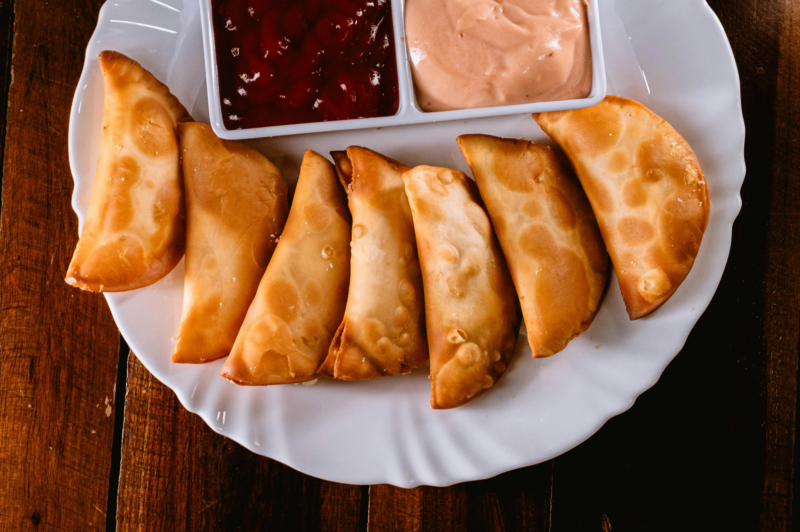

National Empanada Day
Today is all about Empanadas!


Today is April 8th, and it's National Empanada Day! I want to talk about this unique food that I've personally never tried, but would love to give it a shot one day.
So what exactly is an empanada? An empanada is a very popular Spanish pastry that is typically stuffed with seasoned meat, cheese, and vegetables. Then they are either baked or fried. In different regions in South America, the filling can be different. Also, did you know that the name "empanada" comes from the Spanish word "empanar," which means to wrap or cover? At the time of writing this post, I am still not allowed to eat solid foods yet, so I cannot exactly say how it tastes, but I could imagine a delicious beef pastry!
Unfortunately it is not easy to write about food when you can't try it, so this post will be wrapped up shortly. Stay tuned and look out for tomorrow's post where I will discuss the next great National Food Day!